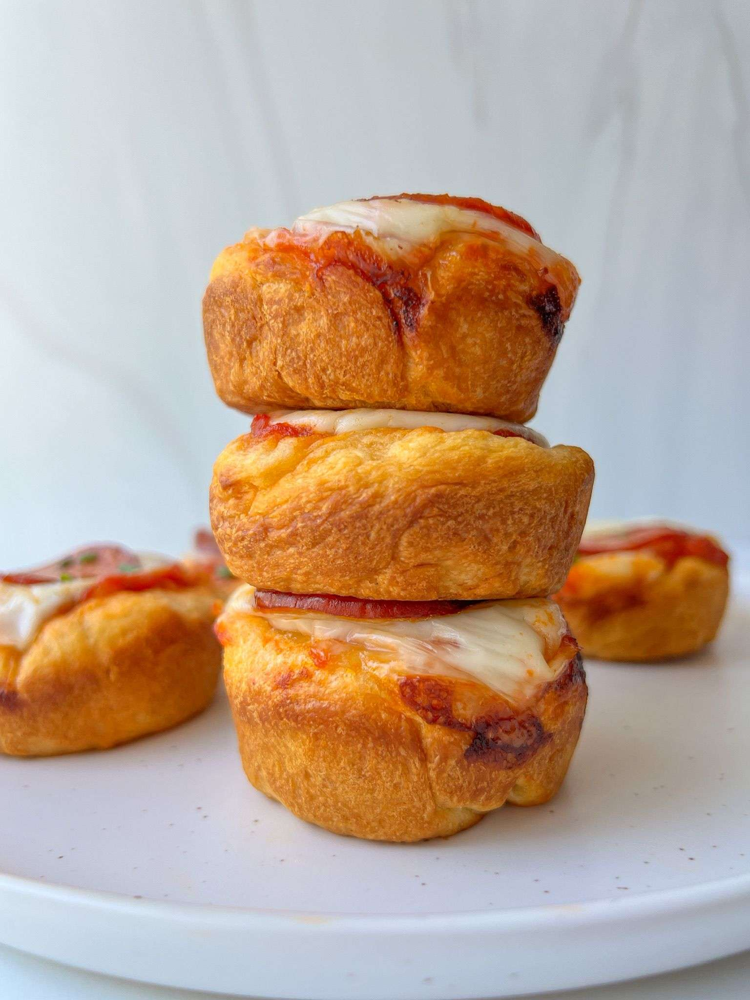

Pizza Bites

Description
These are ooey and gooey, offering all the flavor of pizza but at a fraction of the labor and time it takes to make a full pizza.
Being bite-size not only makes these a great grab-and-go snack for kids but also a fun party appetizer or game day snack.
Ingredients
- 1 package Pillsbury Crescent Rolls , 8 oz
- avocado oil spray, (optional)
- 8 teaspoons pizza sauce
- 8 pieces fresh mozzarella cheese
- 8 slices pepperoni
Steps
- Preheat oven to 400 degrees.
-
Unroll the Pillsbury dough, pull apart each piece and take each triangle and roll it into a ball.
Flatten that dough ball and spray your muffin tin with some avocado spray, if using.
If your muffin tin is brand new and non-stick you might not have to spray it at all.
- Flatten each piece of dough into the muffin tin and make sure to press it down and along the sides so that it looks like a little cup
- Place 1 teaspoon of pizza sauce into each cup and top with a piece of mozzarella.
- Add a slice of pepperoni on top and bake for 15 minutes or until the pizza bites are puffed up and golden. Enjoy!